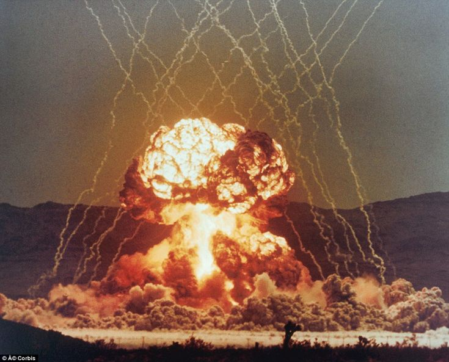

Solving the mystery of the "UFO that appeared at every nuclear explosion test in the atmosphere" to which Richard Dolan's frequent references to.

Abstract
These UFOs may have been a group of small rockets for releasing chaff (plus dosimeter sheets) launched by the U.S. military from the ground for scientific observation of nuclear explosions. When the small rocket group reached the designated altitude, it exploded and scattered the built-in chaff around it.
The appearance of the explosion was probably misinterpreted as "massive numbers of bogies" by the soldiers watching from afar. If the chaff scattered over the area of the nuclear explosion were observed by multiple Doppler radars, detailed data on the atmospheric motion caused by the nuclear explosion would be obtained. A dosimeter sheet could measure the distribution of the maximum radiation intensity over the sky.
There have been no reports of UFOs appearing in such large numbers of bogies at all, except for these nuclear explosion tests. Therefore, it is reasonable to assume that this is not a UFO but a piece of equipment that was dispersed in large numbers to collect observation data at the time of the explosion.
To begin with, if a large number of "massive numbers of bogies" really appeared over the area of the planned nuclear explosion, the nuclear explosion test would have been immediately cancelled at that time. The fact that it was not canceled (and that it appeared every time and was not canceled every time) means that it was not an unidentified aircraft but an observation device. It should be impossible to make a serious counterargument to this.
History
(2022-07-29) Add. (2021-10-25) Created by.Preface
. - From the topic of an internet conference on the subject of "Crashed UFO Recovery". - Participants:. JI: James Iandoli DS: Danny Silva RR: Ryan Robbins JM: Joe Murgia RD: Richard DolanQuoting the main part
- 47:00 RD: UFOs appeared every time just before a nuclear explosion test. In only one case did it appear during a nuclear explosion and a diver named David went to investigate. i i just mentioned because um 45:26 in a book i wrote i wrote ufos for the 21st century mind a number of years ago and in that i put in a story of a man 45:32 that i interviewed his name was david u.s navy and uh he he was part of something called operation dominic which was also 45:39 1962. and dominic was a series of high altitude nuclear detonations this is in 45:45 the period where the united states was just detonating nukes like all the time and so were the soviets the 45:51 russians and dominic went from i think april 1962 to october 45:58 the actual had ended during the cuban or right after the cuban missile crisis so this went through late october 1962 46:05 and this man was part of a number of those so he was at a navy vessel off the coast of hawaii 46:10 and he would first of all one thing he said to me is that this was typical that every time before there was 46:17 a scheduled detonation because they did i think there were 36 high altitude nuclear detonations during that period 46:24 of time so from april to uh october's amazing 46:30 good god right so he said there were always these massive numbers of bogies that were way 46:35 up there we always detected them he said and they always disappeared right before 46:41 we did the detonation he said except for one time and that was the second last 46:47 um uh scheduled test of operation dominic and i think 46:53 was october 25th 1962 and he said we were off coast so why 500 miles i think 46:58 west of of the hawaiian islands and this thing happened and 47:03 he i'll skip a lot of the details i wrote about it but he basically said this one 47:09 object came down and it was tracked they sent a recovery team out there which failed to recover this object but one 47:15 diver um according to this man david who spoke to me 47:20 um came down and landed he was the first diver to do like a 47:26 recon of it and he was standing on top of him didn't even realize it and just basically freaked out he said 47:32 he could see through it partially it was almost like a honeycombed type of a look it's crazy story but i 47:40 all i will say is i know this man and the number of other people he's out in california he's 47:46 getting on in years but a lot of people know him and i think he's got a lot of credibility - 49:00 RR: George Knapp states. Nevada test site. UFOs appeared slightly before, after, and sometimes during nuclear explosions. 47:53 oh yeah go ahead robert i was just going to say that because we're on the nuclear detonation subject i i recall george 48:00 knapp saying that in some of the research he did that there were people who were actually paid 48:05 during their like the test site in nevada when they would actually blow up nuclear devices 48:12 there were people that were paid to be on the lookout for uap and knapp said that sometimes they would 48:18 see uap a little bit before the detonation or a little bit after the detonation and sometimes even during the 48:23 detonation which i thought was really interesting that they actually allegedly um hired 48:29 people to be on the lookout for uap because uap are interested in in nuclear 48:34 installations and even the detonation of nuclear devices apparentlyVideo (2:28:29)
UFO Crash Retrieval Panel - James Iandoli, Danny Silva, Ryan Robbins, Joe Murgia, Richard Dolan (2021-10-25) (2022-07-29)
(2022-07-29 begin)supplement
- JI: About Startfish Prime. It seems that there was once a plan to crash a UFO with an EMP from a nuclear explosion in the atmosphere. 44:14 okay yeah starfish prime i believe it was 44:19 1962 or 1968 and it was a high altitude nuclear detonation test 44:25 and apparently i mean you know tom delong has talked about it on i believe coast to coast or state of black and he said 44:32 it was intentionally done to see if this would work to take down ufos allegedly i 44:37 don't know if that is true but um so when they did this high altitude 44:44 nuclear detonation it creates a massive emp burst electromagnetic pulse 44:50 and that had allegedly interfered with um 44:56 the ufo's technology and taken them down and you know when i asked lou elizondo 45:01 about it on the interview i did with him he speculated that you know if they have 45:06 some kind of uh force field or bubble around them that that emp 45:12 might so to speak pop that bubble and bring them to regular gravity instead of anti-gravity and basically nullify theirPreface
- I've been thinking about the identity of this UFO.My view
. - Below is a reference to the bogy in question, which appeared before the nuclear test and disappeared just before the nuclear explosion. he said to me is that this was typical that every time before there was 46:17 a scheduled detonation because they did i think there were 36 high altitude nuclear detonations during that period 46:24 of time so from april to uh october's amazing 46:30 good god right so he said there were always these massive numbers of bogies that were way 46:35 up there we always detected them he said and they always disappeared right before 46:41 we did the detonation he said except for one time - The following is my guess as to the identity of this UFO. - This UFO may have been a group of small rockets for releasing chaff (plus dosimeter sheets) launched by the U.S. military from the ground for scientific observation of nuclear explosions. When the small rocket group reached the designated altitude, it exploded and scattered the built-in chaff around it. - The appearance of the explosion was probably misinterpreted as "massive numbers of bogies" by the soldiers watching from afar. If the chaff scattered over the area of the nuclear explosion were observed by multiple Doppler radars, detailed data on the atmospheric motion caused by the nuclear explosion would be obtained. A dosimeter sheet could measure the distribution of the maximum radiation intensity over the sky. - There have been no reports of UFOs appearing in such large numbers of bogies at all, except for these nuclear explosion tests. Therefore, it is reasonable to assume that this is not a UFO but a piece of equipment that was dispersed in large numbers to collect observation data at the time of the explosion. - To begin with, if a large number of "massive numbers of bogies" really appeared over the area of the planned nuclear explosion, the nuclear explosion test would have been immediately cancelled at that time. The fact that it was not canceled (and that it appeared every time and was not canceled every time) means that it was not an unidentified aircraft but an observation device. It should be impossible to make a serious counterargument to this. - Note that Knapp's coverage of the UFO that remained until the middle of the nuclear explosion as: knapp said that sometimes they would 48:18 see uap a little bit before the detonation or a little bit after the detonation and sometimes even during the 48:23 detonation - This UFO probably just happened to have one of the automatic devices controlling the launch and detonation of the small rocket malfunctioned and its timing was delayed. - Since the word "bogy" is mentioned, it could have been chaff + dosimeter sheets sprayed from a military aircraft. It could have been a small rocket from the ground or a military aircraft, depending on the situation. - The testimony of a diver named David, whom Dolan interviewed, may have been that it was observation equipment with a small parachute that was dropped overhead in a similar manner. He said that it was constructed "almost like a honeycombed type of a look" to withstand the impact of the explosion. - In the military, soldiers other than generals and senior officers are given only the information essential for operational activities, and no further information is given (to prevent information leaks). Therefore, speculation arose, which probably led to David's testimony and the testimony that a large number of bogy appeared just before the nuclear explosion. (2022-07-29 end)
First published article (Japanese)
Richard Dolan, George Knapp : 核実験場で核爆発の（前後ではなく）最中に UFO が出現した事例がある。（途中2） (2022-07-29)
2022-09-07 Addendum.
Suppose it is true that a UFO appeared during the nuclear explosion, and that the UFO was not a ball lightning. In that case, it could not have been a UFO that crashed during the Roswell Incident.
If, as George Knapp says, the UFO appeared during the nuclear explosion, it would have been able to withstand the shock (plus EMP) of the nuclear explosion. There is no way that a UFO of that magnitude could be brought down at Roswell by the US military's powerful radar.
Related Past Articles
Testimony of a former soldier: He waited and observed UFOs appearing at the site of nuclear tests. (2021-08-13)
1962-1963: UFOs appeared each time during a series of atmospheric nuclear tests conducted by the U.S. (2015-02-10)
A specialized team was deployed at the nuclear test site to wait for the UFO and observe it. (2021-08-26)
Thanks
- Translated with www.DeepL.com/Translator
(2022-09-08 translation)